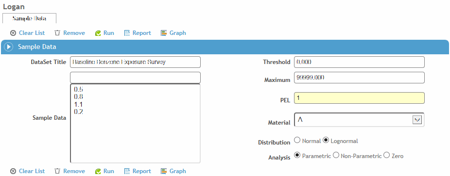
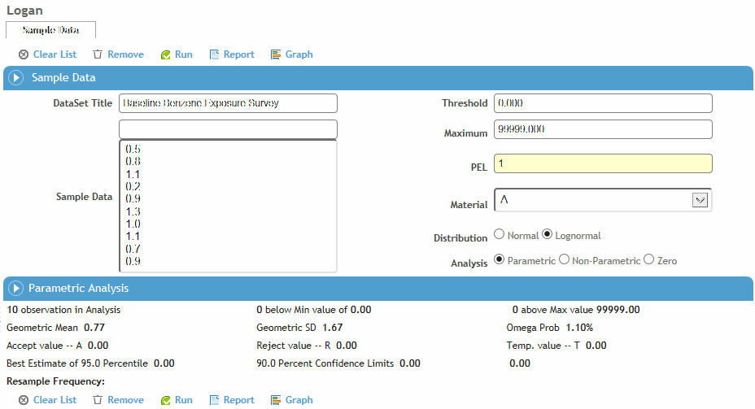
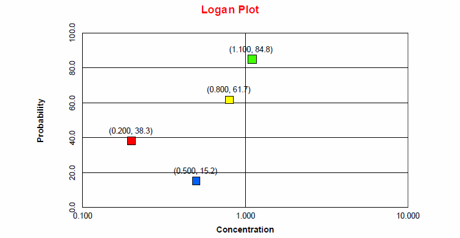

If your assessment of your sampling results does not allow you to directly determine the risk of exposure to the material, you can use Logan to predict the risk.
Results can also be transferred to the Logan program from the Summary Air Monitoring Results by Agent report. See Industrial Hygiene Reports.
In the Industrial Hygiene menu, click Logan.

In the Sample Data field, enter each result, pressing enter after each entry.
To remove a result from the Results list, select the result in the list and click Remove. To clear the entire list, click Clear List.
Enter the appropriate Threshold, Maximum, and PEL (permissible exposure limit) values. From the Material list, select the class the material belongs to. In the Distribution area, accept the default Lognormal setting. In the Analysis area, either accept the default Parametric setting, or choose one of the other settings.
Click Run. Cority will indicate if there is enough data for decision-making.
Click OK to continue. Logan’s analysis of the results and a recommendation for the resampling frequency is displayed.

To display the Logan Plot, click Graph.

To print the Logan recordset, click Report.